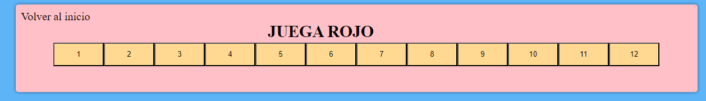
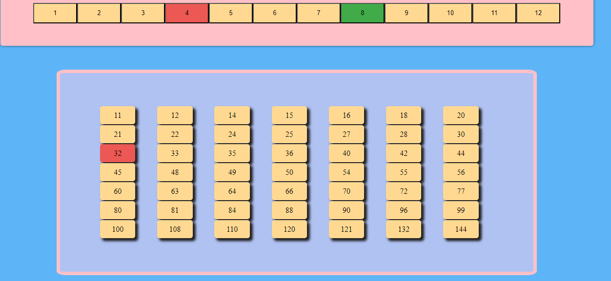
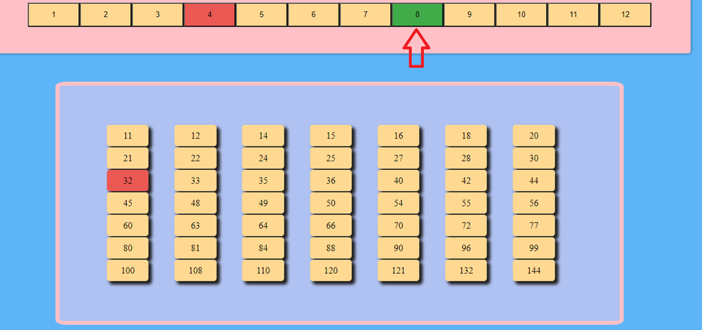
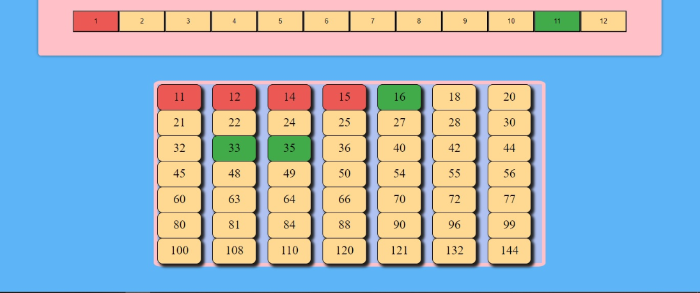

INTRODUCCIÓN "JUEGO DEL GATO"
El juego del gato es un juego que tiene como objetivo hacer líneas de cuatro casilleros (números) seguidos de un tablero.
Reglas del juego
- Se puede jugar solamente de a dos personas o en dos grupos;
- Gana el que consigue 4 casillas pintadas o un 4 en raya;
- Se juega por turnos.
Cómo jugar
- El primer jugador (rojo), debe seleccionar dos números de la fila de factores: puede optar por dos números distintos o por el mismo número.

- La multiplicación de esos números, será remarcada en la grilla de la parte inferior con color rojo.

- El jugador oponente (verde), tendrá que seleccionar el número que quiere desmarcar, para luego marcar otro.
- Ejemplo: Aqui desmarcamos el 8:

- Y aqui seleccionamos el 5 para marcar el 20 en la grilla:

- Por turnos, se reitera el proceso, y gana el primer jugador que ocupa cuatro números seguidos en línea. La línea puede ser horizontal, vertical u oblicua.

- ¡¡¡¡¡¡A TENER EN CUENTA!!!!!! Si usás una combinación que no esté en el tablero, o que ya esté pintada PERDERÁS EL TURNO.